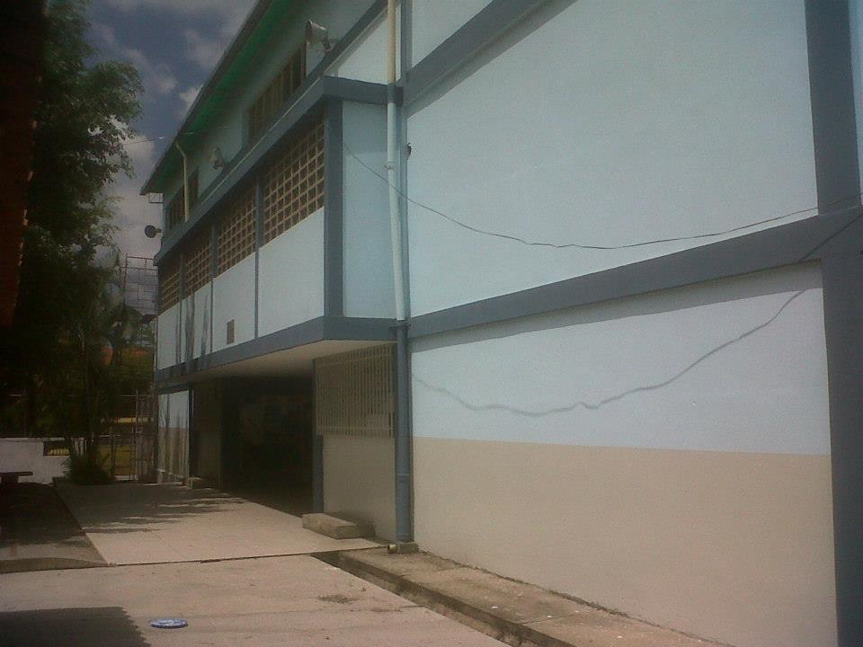

RESEÑA HISTÓRICA
El 1ro. De Octubre de 1.971, el Ciclo Básico “Monseñor Dr. Estanislao Carrillo” fue fundado en las viejas instalaciones donde funcionaba el Colegio Privado “Cecilio Acosta”, ubicado, en el sector la Llanada de Carvajal y cuyo propietario era, el Prof. Canelón Cestari. Para esa época, La dirección del Plantel estaba bajo la responsabilidad del Prof. Rodolfo Enrique Moreno Matheus, quien junto a un grupo de personeros de la Comunidad, convoca al personal directivo, docente, administrativo y obrero, para iniciar el proceso de inscripción y organización del Plantel. Se logran apertura diez (10) secciones del primer año del Ciclo Básico Común y en los sucesivos períodos 72-73, 73-74, y 74-75, continua la prosecución del 2do y 3er año del Ciclo Básico Común. En esos tiempos, al egresar los alumnos del Básico debían emigrar hacia los Liceos de Valera para continuar y culminar sus estudios de Bachillerato o sencillamente, era la circunstancia precisa para abortar un significativo número de alumnos del sistema escolar regular. Del Personal Fundador, se recuerda como forjadores de destinos y constructores de sueños, a nuestros bienamados Profesores: Alves Pachano Rivera, Gladys de Muller, Cristóbal Rivas, Romer Zambrano (+), Consuelo Juárez, Aura Estela de Durán, Gilberto Cáceres, Luis Rangel , Orlando y Carlos Briceño. Y, entre los obreros, aún encontramos, en el presente 2003, al Sr. Victor Peña. Efectivamente fue, a partir de Marzo de 1973, que la comunidad entera, logra que la Gobernación del Estado y el Ministerio de Desarrollo Urbano (MINDUR), presupuestaran la nueva sede que garantizara a la población Carvajalence, que sus hijos lograrían obtener el Título de Bachiller, en su propio lugar natal.
Noviembre de 1975, es la fecha que se inaugura en el Sector La Horqueta, a escasas pero largas dos (2) cuadras de la Plaza Bolívar de Carvajal, la nueva Planta Física del Ciclo Diversificado ”Monseñor Estanislao Carrillo” y Julio de 1977, el mes y año, que egresa su PRIMERA PROMOCIÓN de Bachilleres en Ciencias, apadrinada por el Prof. José Méndez Quijada y la de Bachilleres en Humanidades, fue otorgada en merecido reconocimiento, al Director Fundador del CD Estanislao Carrillo, Prof. Rodolfo Enrique Moreno Matheus (reconocido mayormente, como Emiro Moreno). Dentro del grupo de jóvenes profesores, que se desempeñaban en el Plantel, no podremos dejar de mencionar a los Profesores: Luis Alejandro y Betty Rojas de Vargas, Alfonso e Idarmis Rodríguez de Aguilar, Naida Pachano de Salcedo, Dora Dávila de Moreno, Betty Osorio, Belkis de Ramos, Antonio Peñalosa, Blanca Cano, José Travieso, Ricardo y Maritza Kent, Lucy Páez, Gilberto Miranda, Domenico Cella, Pedro Silva, Alfredo Viloria, Nerio Núñez, Ramón Pachano, Nelson Guaramato, Elizabeth Pachano de Aranguren, Sandra Pestaña y Bernardo Jerez entre otros. Y, del cuerpo secretarial, las Señoras: Gladis de Vitoria, Gladis Briceño y todavía la Sra. Carmencita Viloria, Secretaria de la Dirección del Plantel. La siempre imponente Sra. Brígida Torres y los obreros de número, Señores: Alfonso Briceño, Maritza Arrollo, Petra de Ribas y Ofelia Rangel, acompañados por más de veinte años por el Sr. Felipe Rodríguez, conductor del Bus Escolar.
La fructífera labor de la UEN Monseñor “Estanislao Carrillo”, es producto del Trabajo de otros y otras, múltiples Profesores y Profesoras, que han hecho escuela y camino al andar. Muchos de ellos y ellas, lejos… de las famosas “Calle arriba y Calle abajo”, de la hermosa, sinigual y bien representada de la Cultura Timoto Cuica. La Ciudad de la Carvajal y su “Casa Grande”, recuerdan con beneplácito y alta estima, a los apreciados y distinguidos Colegas: Crisanto Pérez e Iris Mejía, Belkis Carrillo, Lady Ramírez, María Modesta Torres, Freddy Cordero, María de Pérez, Magali Aguilar, Pablo Rivero, Rafael Hernández, Antonio Vitoria, Edelmira de Pirela, Freddy Mora, Magali Cano, Carlos Terán, Ender león, Oliva Briceño, Leoncio Labarca, Elsa Olmos, Nuris Vitoria, Xiomara Matheus, Oneida Artigas, Reina Cabrera y Gladis Moreno.
Y, entre las dos últimas décadas, se incorporaron Profesionales de la Talla de Teodulo Castillo, Magali Monasterios, Josefa Linares, Yolanda Graterol, Asunta Guardiani, Teresita Cañizales, Aurora Vitoria, Isabel Matos, Yajaira Briceño ( exalumna de la Básica y estudiante de la primigenia sede carrillista), Alba Chuecos, Leída Villarreal, Eddy Villegas, Josefina Peña, Benita Ramos, Mirta Chávez, Luis Pérez, Emiro Carrasqueño, Carlos Araujo, Leander Araujo, Nelson Vitorá, Bárbara Breet, Francisco Fajardo, Magda Rojo, Rubén Morales, Guillermina Ruiz, Ignacia Angel, Dilcia Herrera, Ana Teresa Vetencourt, Eufrosina Graterol, Giralda Rivas y Ana Morales.
Para Agosto del 2000, por la conversión de la UEN María Dolores de Araujo (el plantel contiguo) en Escuela Bolivariana, la Zona Educativa del Estado, reubicó para el Estanislao Carrillo, un connotado número de Profesionales de la Docencia, entre quienes se encuentran el Prof. Jesús Peña (Peñita), Nancy Pérez (brillante ex alumna integrante de la I Promoción de Brs), Gladis Olivares, Ana Haidée Rojas, José Cerrada, Gerard Alerte, Amable Valecillos y Rosa García; Personal de alto desempeño que sumara historia al devenir de la comunidad carrillista.
En Enero 2003, el Plantel cuenta con un staff de Profesores cercano a los 80 Docentes. De los cuales fueron asignados en los últimos cinco años, los Profesores: Iraide Baptista, Vicente Araujo, Rosa Barreto, Irma Molina, César Telles, José Gregorio Herrera, Nelly Ävila, Pedro Bermúdez, Vianney Rondón, José Gregorio Cubarrubias, Pablo Torres y Ligia Teresita Pacheco. Este transitar de Educadores por los diferentes ambientes escolares del Plantel, fue dirigido en el tiempo por los siguientes Directores:- Prof. Emiro Moreno – Prof. Baptista – Lic. Nerio Núñez – Prof. Leoncio Labarca – Lic. Luis Alejandro Vargas y Prof. Idarmis Rodríguez de Aguilar (forjó su carrera docente en el Plantel como, Prof. de aula – Jefe de Seccional – Jefe de Departamento y Subdirectora). Entre otros cargos Directivos y de apoyo gerencial, ejercieron con hábil magistratura los Profesores: Alves Pachano, Antonio Vitoria, Rafael Hernández, Belkis Fernández y Betty Osorio. Para el año 2003- 2004, es designada como Directora (e) la Lic. Nelly Ávila 2003-2004. La Institución extiende su trascendencia y para 2004- 2005 otorga la continuidad en el ejercicio directriz al Lic. Freddy Mora, Docente de Arquilotados y virtuosas cualidades, que desarrolla con excelsa maestría durante dos décadas consecutivas, el sistema Informático que sustancia la red Telemática de los Departamentos de Control de Estudios, Evaluación y Laboratorios de computación del plantel.
Y fomenta en las sedes de las escuelas Básicas” Unidad Educativa José Antonio Velazco “de San Genaro, el primer año al mando de un director de docentes, cuyo trabajo tesonero y engrandecedor, fue desarrollado por la profesora Josefina Peña. Chepina, que junto la Prof. Pablo Torres (Recién incorporado colega a las nominas del plantel) demostró además de gallardía, suficiencia en el andar administrativo que favoreció y beneficio al conglomerado de adolescentes que defendían el bastión Carrillista, junto a los Profesores:
Al mismo tenor, la Lic. Magali Aguilar, secundada con el otrora docente escuqueño, Prof. Vicente Araujo, sembraron en el destacado grupo de alumnos acantonados en la sede de la Unidad Educativa Manuel Maria Carrasqueño”. Que el porte, forma y el nombre del Monseñor Estanislao Carrillo los arropaba en dicha estructura Física y que el cuerpo de profesores del Liceo hacía en galán de la representación Carrillista, en el acontecer diario de las aulas del otro plantel. Finalmente la Zona Educativa la Alcaldía de Carvajal, las Instituciones Educativas inserta en los nuevos modelos de proyecto Educativo local convergieron en la necesidad de redimensionar el plantel y para octubre del 2005, al Estanislao Carrillo, inicio su transito en los estudios de la escuela técnica, para ser convertida el pasado 2006, en la Escuela Técnica Robinsoniana, nombrando como punta de lanza Institucional a nuestra excelente Prof. Aurora Viloria- mujer , Carachense destacada colega que habiendo fraguado su carrera profesional entre el liceo y la población de Santa Isabel es trasladada al Estanislao Carrillo, para hacer patria.
Para el año 2005-2006 se da inicio a la Escuela Técnica Robinsoniana monseñor Estanislao Carrillo”, con miras egresar Técnicos Medios en Registros y Estadísticas de Salud, Promoción en Deporte y Recreación e Informática. En la Dirección del plantel labora como Directora la Lic. Maria Aurora Viloria Rodríguez; docente de aula, coordinadora de seccional por 10 años sub.-directora (e) en el año escolar 2008 egresa la Primera Promoción de Técnicos Medios.